Confira aqui quais animes estiveram em alta nesse verão e quais estão sendo mais comentados para essa temporada de outono de 2026
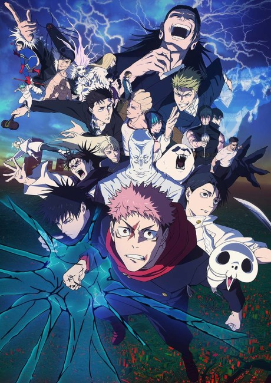
Jujutsu Kaisen: Shimetsu Kaiyuu – Zenpen é a primeira parte de uma narrativa intensa ambientada no universo de Jujutsu Kaisen, onde
o caos se espalha após o início de um jogo mortal que envolve feiticeiros e maldições. A história acompanha Yuji Itadori e seus aliados
enquanto são forçados a participar de um ritual brutal conhecido como “Culling Game”, criado para evoluir a energia amaldiçoada e
mergulhar o Japão em um novo estágio de conflito.
Jujutsu Kaisen: Shimetsu Kaiyuu – Zenpen é a primeira parte de uma narrativa intensa ambientada no universo de Jujutsu Kaisen, onde o
caos se espalha após o início de um jogo mortal que envolve feiticeiros e maldições. A história acompanha Yuji Itadori e seus aliados
enquanto são forçados a participar de um ritual brutal conhecido como “Culling Game”, criado para evoluir a energia amaldiçoada e
mergulhar o Japão em um novo estágio de conflito.
Com batalhas intensas, reviravoltas emocionais e um clima constante de tensão, esta primeira parte estabelece o tom sombrio de uma das
fases mais perigosas da história, onde cada decisão pode significar a diferença entre a vida e a morte.
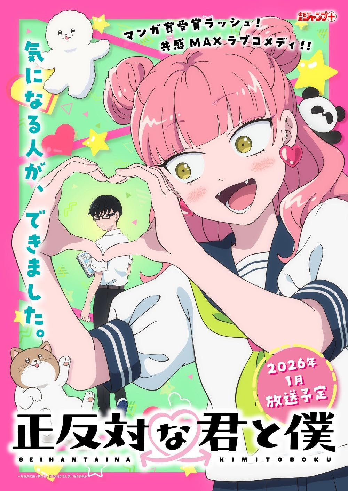
Seihantai na Kimi to Boku é uma comédia romântica que acompanha o cotidiano de dois estudantes completamente opostos em personalidade.
De um lado, uma garota extrovertida, impulsiva e cheia de energia; do outro, um garoto introvertido, calmo e que costuma pensar muito
antes de agir.
Apesar das diferenças gritantes, os dois acabam se aproximando de forma inesperada, criando uma dinâmica leve e divertida. Enquanto ela
tenta puxá-lo para fora de sua zona de conforto, ele oferece a ela um ponto de equilíbrio, resultando em momentos tanto engraçados quanto
sinceros.
Ao longo da história, o contraste entre suas personalidades revela que, mesmo sendo totalmente diferentes, eles se complementam de
maneira única. Entre situações do dia a dia escolar, mal-entendidos e pequenas descobertas sobre si mesmos, o anime explora o crescimento
emocional dos personagens e mostra como o amor pode surgir justamente entre aqueles que parecem não ter nada em comum.

A 2ª temporada de Jigokuraku continua a jornada intensa de Gabimaru e seus companheiros na misteriosa ilha onde buscam o Elixir da
Imortalidade.
Após os eventos da primeira temporada, a história se aprofunda nos segredos sombrios da ilha, revelando mais sobre os seres estranhos
que a habitam e a verdadeira natureza do local. Novos inimigos surgem, ainda mais perigosos, enquanto alianças são colocadas à prova e
o grupo precisa lidar com perdas, traições e escolhas difíceis.
Ao mesmo tempo, o passado dos personagens ganha mais destaque, especialmente o de Gabimaru, trazendo conflitos internos que impactam
diretamente suas decisões em combate. A relação com Sagiri também evolui, mostrando um desenvolvimento emocional em meio ao caos.
Com lutas ainda mais intensas, revelações importantes e um clima cada vez mais sombrio, a 2ª temporada eleva os riscos da missão,
deixando claro que sair da ilha com vida pode ser mais difícil do que imaginavam.
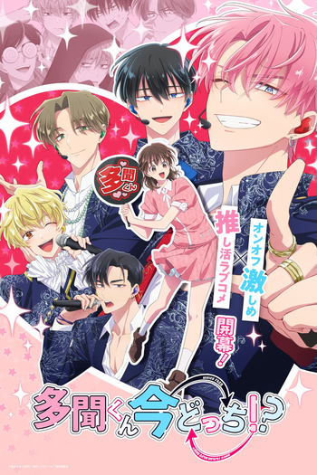
Tamon-kun Ima Docchi!? é uma comédia romântica que gira em torno de uma fã dedicada e um idol cheio de contrastes inesperados.
A história acompanha Utage, uma garota apaixonada por um famoso grupo idol, especialmente pelo carismático e aparentemente perfeito
Tamon. Para o público, ele é sempre gentil, sorridente e confiante — o típico “príncipe” dos palcos. No entanto, fora dos holofotes,
Tamon revela um lado completamente diferente: inseguro, desanimado e até um pouco pessimista.
Por um acaso do destino, Utage acaba se aproximando dele em sua vida pessoal e descobre essa dualidade. A partir daí, ela passa a
lidar com as duas versões de Tamon — o idol brilhante e o jovem comum cheio de dúvidas — tentando ajudá-lo enquanto também enfrenta
seus próprios sentimentos.
Entre situações engraçadas, momentos constrangedores e interações sinceras, a história explora o contraste entre aparência e realidade,
mostrando que por trás da imagem perfeita pode existir alguém que só precisa de apoio para ser quem realmente é.
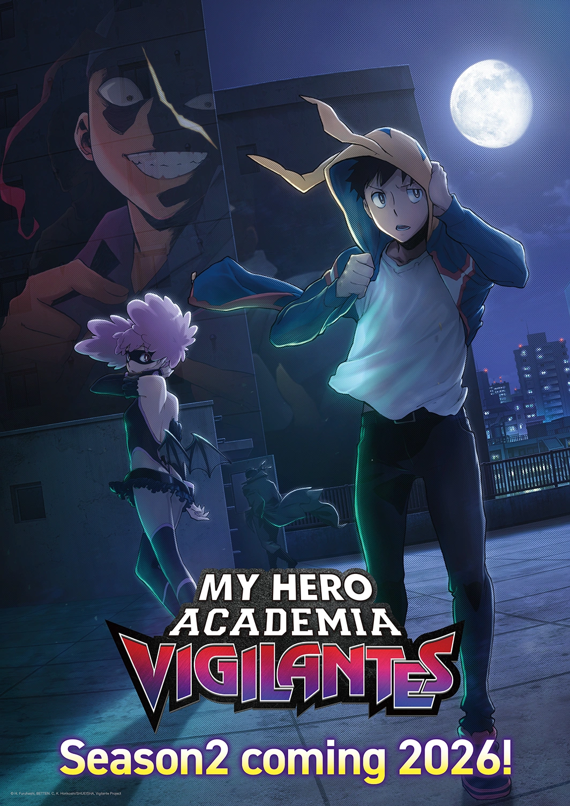
A 2ª temporada de Vigilante: Boku no Hero Academia Illegals aprofunda ainda mais o lado sombrio da sociedade de heróis, focando na
atuação daqueles que operam fora da lei.
A história continua acompanhando Koichi Haimawari, também conhecido como “The Crawler”, enquanto ele evolui como vigilante e enfrenta
ameaças cada vez mais perigosas. Ao lado de Pop☆Step e Knuckleduster, o grupo se envolve em casos mais complexos, ligados ao submundo
e a experimentos ilegais com individualidades (quirks).
Nesta fase, os conflitos ganham maior escala e intensidade, especialmente com a presença de vilões mais instáveis e organizações que
operam nas sombras, colocando em risco tanto civis quanto heróis oficiais. Ao mesmo tempo, o passado de alguns personagens começa a vir
à tona, trazendo revelações que impactam diretamente suas motivações.
Com um tom mais urbano e realista em comparação à série principal Boku no Hero Academia, a nova temporada destaca o peso das escolhas
feitas fora do sistema e questiona o verdadeiro significado de ser um herói quando não há reconhecimento nem proteção da lei.

Isekai no Sata wa Shachiku Shidai é uma história que mistura fantasia com o cotidiano de trabalho, acompanhando um protagonista que
leva sua mentalidade de “funcionário dedicado demais” para outro mundo.
A trama segue Seiichiro, um típico shachiku (alguém explorado pelo trabalho) que, mesmo após ser invocado para um mundo de fantasia,
continua agindo como um trabalhador incansável. Em vez de se destacar em batalhas ou aventuras heroicas, ele chama atenção por sua
eficiência, disciplina e habilidade em resolver problemas administrativos e estratégicos.
Enquanto outros heróis focam em combates, Seiichiro acaba se tornando indispensável nos bastidores, organizando tarefas, otimizando
recursos e ajudando o reino a funcionar de forma mais eficiente. No entanto, seu excesso de dedicação também levanta questionamentos
sobre seus próprios limites e o equilíbrio entre dever e bem-estar.
Com toques de comédia e crítica ao excesso de trabalho, a obra mostra que, mesmo em um mundo mágico, certos hábitos da vida real
continuam — e que talvez o verdadeiro desafio não seja derrotar monstros, mas aprender a viver de forma mais saudável.
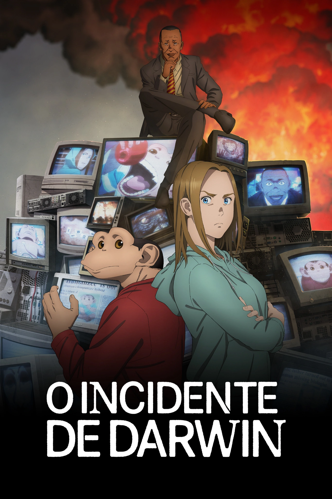
Darwin Jihen é uma obra de ficção científica com forte carga social e filosófica, que acompanha a vida de Charlie, um
“humanzee” — um híbrido entre humano e chimpanzé criado por engenharia genética.
Resgatado ainda filhote de um laboratório ligado a práticas ilegais, Charlie é adotado por uma família humana e cresce tentando
viver como um adolescente comum. Inteligente, sensível e fisicamente extraordinário, ele passa a frequentar a escola e buscar seu
lugar na sociedade, enfrentando preconceitos e questionamentos sobre sua própria identidade.
No entanto, sua existência desperta o interesse de grupos extremistas e organizações que defendem causas animais de forma radical,
colocando Charlie no centro de conflitos perigosos. Enquanto isso, ele desenvolve laços importantes, especialmente com Lucy, uma
colega que o ajuda a entender melhor o mundo humano.
Misturando ação, drama e crítica social, Darwin Jihen explora temas como ética científica, direitos dos animais, discriminação e o
que realmente significa ser humano, em uma narrativa intensa e provocadora.
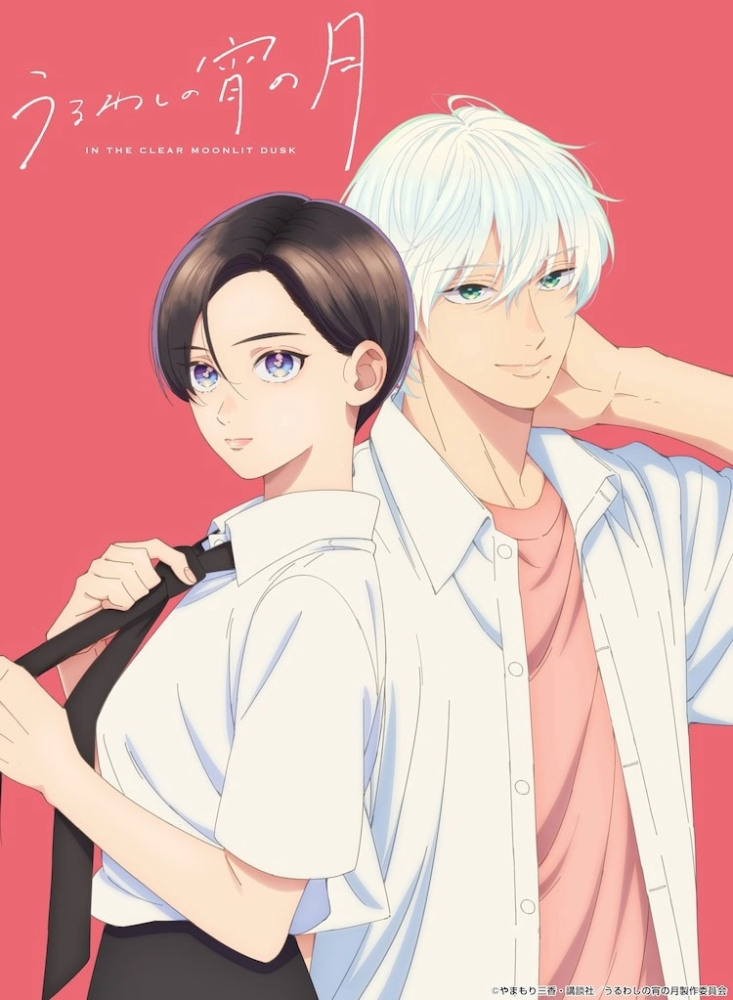
Uruwashi no Yoi no Tsuki é um romance escolar delicado que gira em torno de identidade, aparência e sentimentos que vão além das
primeiras impressões.
A história acompanha Yoi Takiguchi, uma garota conhecida por sua beleza “príncipe encantado” — alta, elegante e frequentemente
confundida com um garoto. Por causa disso, ela sempre foi tratada de forma diferente, recebendo admiração, mas raramente sendo
vista como realmente é por dentro.
Tudo começa a mudar quando ela conhece Kohaku Ichimura, um colega popular e despreocupado que também é chamado de “príncipe”.
Diferente dos outros, ele enxerga Yoi de forma genuína, sem se prender às expectativas ou rótulos que a cercam.
À medida que os dois se aproximam, nasce uma conexão sincera, cheia de momentos sutis, olhares significativos e descobertas
emocionais. Entre inseguranças, autoconhecimento e o desenvolvimento do primeiro amor, a obra explora como duas pessoas podem
se encontrar mesmo carregando imagens que não refletem totalmente quem são.
Com uma atmosfera sensível e personagens cativantes, a história destaca a beleza das relações que surgem quando alguém
finalmente é visto de verdade.
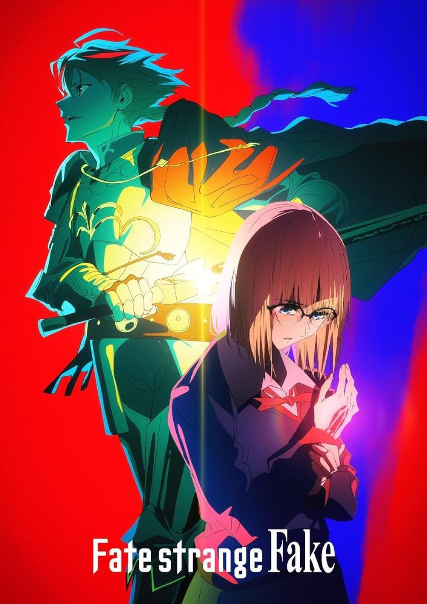
Fate/strange Fake é uma história do universo Fate que apresenta uma versão imperfeita e caótica da tradicional Guerra do Santo
Graal.
Ambientado nos Estados Unidos, na cidade de Snowfield, o enredo gira em torno de uma tentativa de recriar a lendária guerra entre
magos e heróis históricos. No entanto, essa cópia apresenta falhas graves, resultando em uma “Guerra do Santo Graal falsa”, onde as
regras não são seguidas corretamente e o sistema invocado é instável.
Diversos Mestres e Servos — figuras lendárias invocadas para lutar — entram em conflito, mas dessa vez com irregularidades perigosas:
classes incompletas, invocações anômalas e entidades que não deveriam existir dentro desse sistema. Isso transforma a guerra em algo
ainda mais imprevisível e mortal.
Com múltiplos pontos de vista, a história acompanha diferentes participantes, revelando seus objetivos, alianças e conflitos,
enquanto o caos cresce e ameaça sair do controle. Misturando ação intensa, estratégias complexas e mistério, Fate/strange Fake se destaca
por explorar os limites do próprio conceito da Guerra do Santo Graal, mostrando o que acontece quando um sistema poderoso é recriado de
forma imperfeita.

A 2ª temporada de Sousou no Frieren continua a jornada contemplativa da elfa maga Frieren após os eventos da primeira fase da história.
Dando sequência à viagem ao lado de Fern e Stark, a narrativa aprofunda ainda mais os temas de passagem do tempo, memória e conexões humanas.
Enquanto seguem rumo a novas regiões, o grupo enfrenta desafios mais complexos, incluindo confrontos com demônios poderosos e encontros com
outros magos que testam suas habilidades e ideais.
A temporada também explora com mais profundidade o passado de Frieren, revelando momentos importantes de sua antiga jornada com os heróis,
especialmente sua relação com Himmel, e como essas lembranças moldam sua visão atual sobre a vida e as pessoas.
Com um ritmo mais reflexivo, mas ainda equilibrado por cenas de ação e desenvolvimento de personagens, a continuação mantém o tom emocional da
obra, mostrando o crescimento de Frieren ao aprender, aos poucos, o verdadeiro valor dos laços que construiu ao longo do tempo.
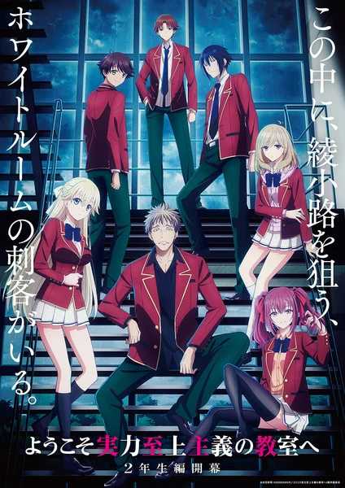
A 4ª temporada de Youkoso Jitsuryoku Shijou Shugi no Kyoushitsu e (Classroom of the Elite) continua
acompanhando Kiyotaka Ayanokoji na prestigiada escola onde os alunos são avaliados com base em mérito, inteligência e
estratégia.
Com o avanço da história, os desafios se tornam ainda mais intensos e complexos, envolvendo jogos psicológicos, provas
elaboradas e disputas entre classes cada vez mais acirradas. Ayanokoji segue atuando nas sombras, manipulando situações e
pessoas para alcançar seus objetivos sem chamar atenção.
Ao mesmo tempo, novas ameaças surgem e segredos sobre o passado de Ayanokoji começam a ganhar mais destaque, colocando em
risco o equilíbrio que ele tenta manter.
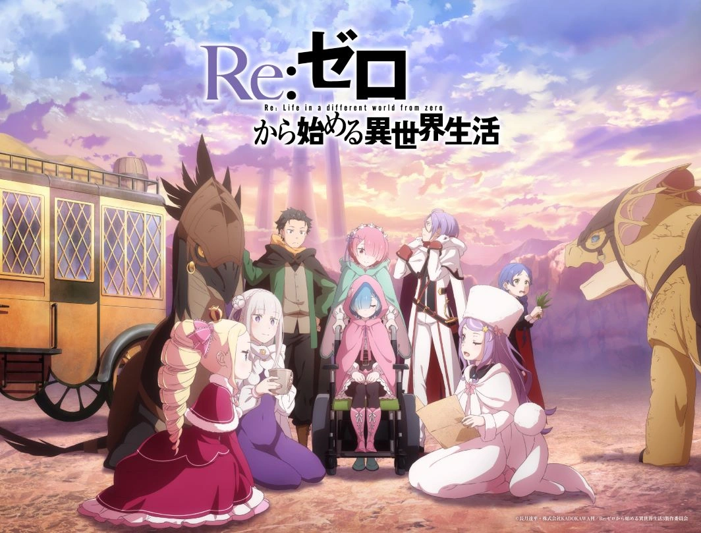
A 4ª temporada de Re:Zero kara Hajimeru Isekai Seikatsu continua a jornada de Subaru Natsuki em um mundo
de fantasia onde ele possui a habilidade de “retornar da morte”, revivendo após morrer e carregando consigo as memórias de
cada tentativa.
Com novos conflitos surgindo, Subaru se vê envolvido em desafios ainda mais complexos, precisando tomar decisões difíceis
para proteger aqueles que ama, especialmente Emilia. As situações se tornam mais perigosas e emocionalmente intensas,
colocando à prova sua resistência mental e sua determinação.
Enquanto alianças são formadas e inimigos poderosos aparecem, segredos do mundo e do próprio poder de Subaru começam a
ganhar mais profundidade, aumentando o peso de cada escolha.
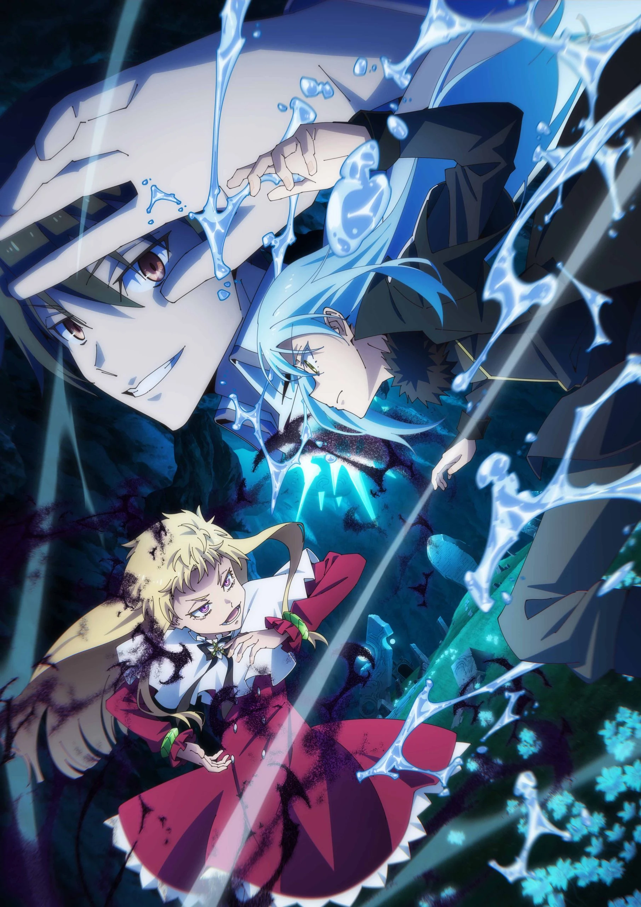
A 4ª temporada de Tensei shitara Slime Datta Ken (That Time I Got Reincarnated as a Slime) continua
acompanhando Rimuru Tempest após sua ascensão como um poderoso Rei Demônio.
Agora liderando a nação de Tempest, Rimuru precisa lidar não apenas com batalhas, mas também com política, alianças e
ameaças internacionais cada vez mais perigosas. Novos conflitos surgem à medida que outras nações e entidades passam a
enxergá-lo como uma grande força a ser enfrentada — ou temida.
Enquanto tenta manter a paz e proteger seus aliados, Rimuru demonstra ainda mais seu crescimento, tanto em poder quanto como
líder, enfrentando decisões difíceis que podem impactar todo o mundo ao seu redor.
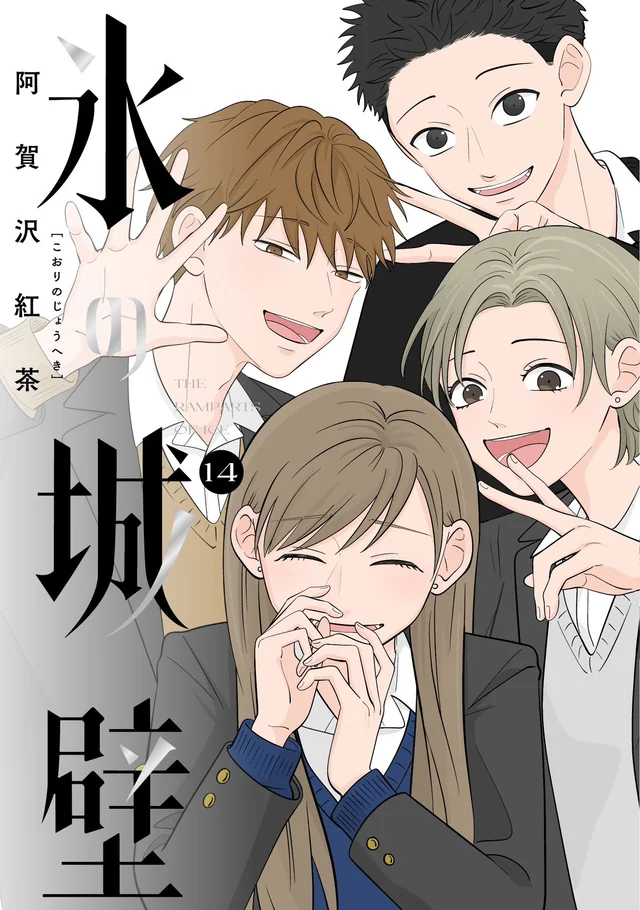
Koori no Jouheki (A Muralha de Gelo) acompanha uma estudante do ensino médio conhecida por sua
personalidade fria e distante, que mantém todos ao seu redor emocionalmente afastados — como se tivesse construído uma
“parede de gelo” ao seu redor.
Apesar de aparentar indiferença, essa atitude esconde inseguranças, dificuldades de se expressar e experiências do passado
que a fizeram evitar conexões profundas. Sua rotina começa a mudar quando novas pessoas entram em sua vida, especialmente
alguém que insiste em se aproximar e quebrar essa barreira.
À medida que os relacionamentos se desenvolvem, a protagonista é confrontada com seus próprios sentimentos e aprende, aos
poucos, a lidar com emoções, vulnerabilidade e a possibilidade de se abrir para os outros.
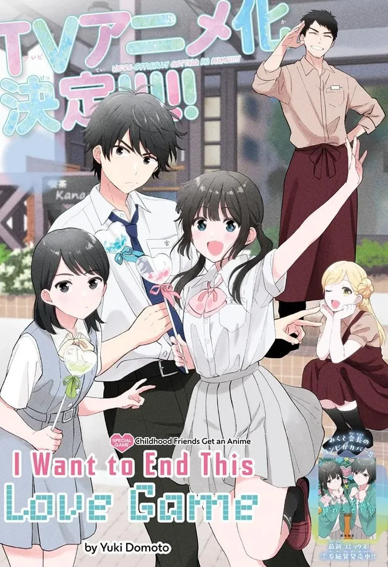
Aishiteru Game wo Owarasetai acompanha dois colegas de escola que vivem presos em um “jogo” curioso:
ambos se gostam, mas nenhum quer ser o primeiro a confessar seus sentimentos. Em vez disso, eles passam o tempo tentando
fazer o outro dizer “eu te amo” primeiro.
Entre provocações, situações constrangedoras e momentos fofos, os dois entram em uma disputa constante cheia de estratégias
emocionais e pequenas armadilhas românticas. Apesar do tom leve e divertido, fica claro que os sentimentos entre eles são
genuínos e cada vez mais difíceis de esconder.
Com o passar do tempo, o “jogo” começa a se tornar insustentável, já que o medo da rejeição e o orgulho entram em conflito
com o desejo de se declarar.
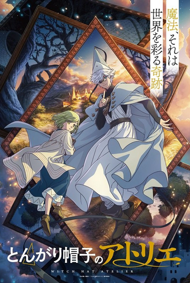
Tongari Boushi no Atelier (Witch Hat Atelier) acompanha Coco, uma garota comum que sempre sonhou em se
tornar uma bruxa, mesmo vivendo em um mundo onde apenas pessoas escolhidas podem usar magia.
Tudo muda quando ela descobre acidentalmente o verdadeiro segredo por trás da magia: ela não é inata, mas sim criada por
meio de desenhos mágicos. Ao tentar usar esse conhecimento, Coco acaba causando um grave acidente que transforma sua mãe em
pedra.
Determinada a corrigir seu erro, ela passa a treinar com o misterioso mago Qifrey, entrando em um mundo repleto de regras
rígidas, perigos ocultos e segredos proibidos sobre o uso da magia.
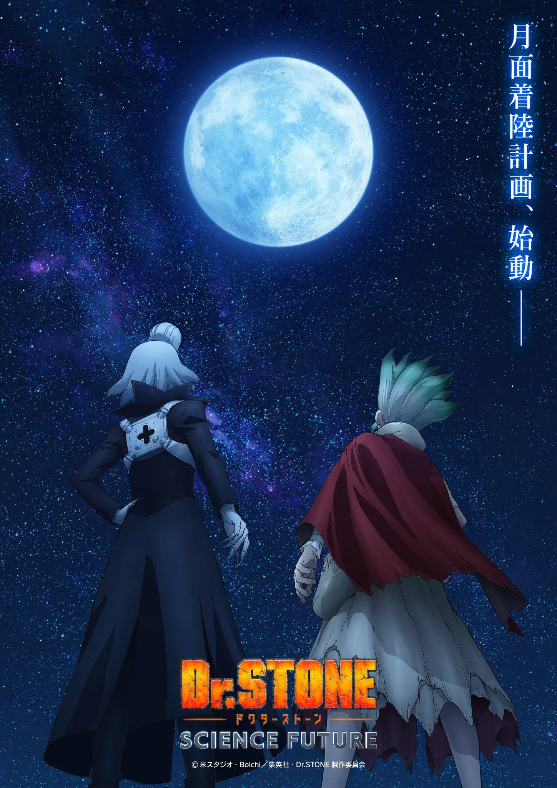
A Parte 3 de Dr. Stone: Science Future continua a jornada de Senku Ishigami e seus aliados na missão de
reconstruir a civilização por meio da ciência após o misterioso evento que petrificou toda a humanidade.
Com avanços tecnológicos cada vez mais impressionantes, o grupo se aproxima de desvendar o grande mistério por trás da
petrificação. No entanto, novos desafios surgem à medida que eles exploram territórios desconhecidos e entram em contato com
outras forças e possíveis inimigos que também evoluíram ao longo dos anos.
Entre invenções, estratégias e confrontos ideológicos, Senku precisa usar toda sua inteligência para superar obstáculos e
manter vivo seu objetivo de restaurar o mundo moderno.
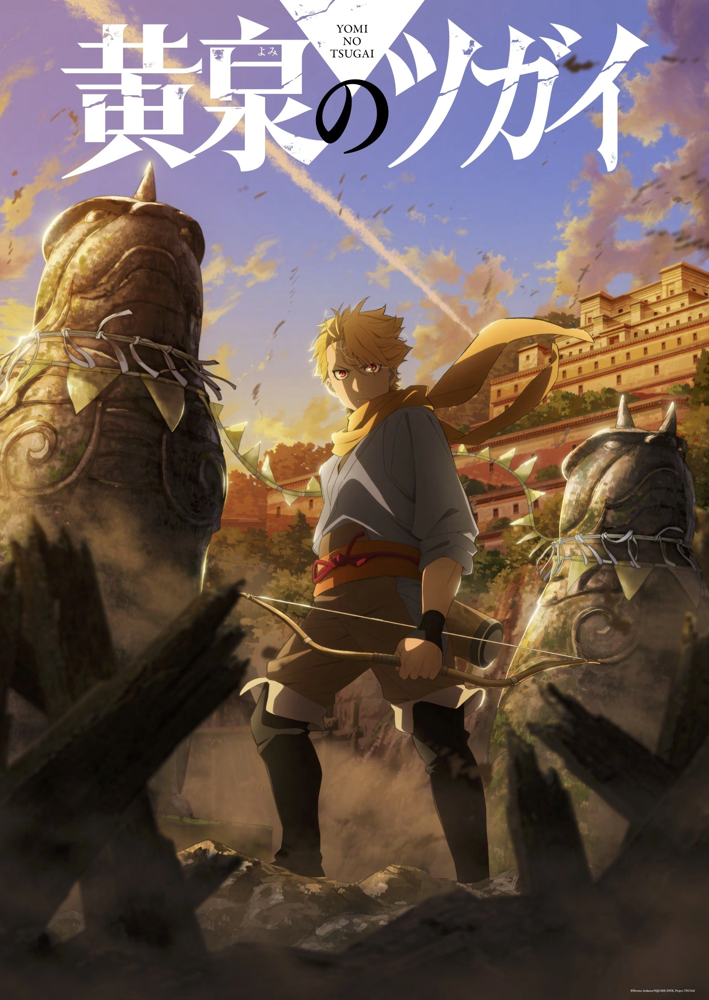
Yomi no Tsugai acompanha Yuru, um jovem que vive em uma vila isolada seguindo tradições rígidas e
misteriosas. Sua vida muda completamente quando eventos inesperados revelam segredos ocultos sobre sua origem e sobre o
mundo ao seu redor.
Separado de sua irmã gêmea Asa, Yuru se vê envolvido em uma realidade marcada por conflitos, conspirações e seres
sobrenaturais conhecidos como “Tsugai”, entidades poderosas que formam pares e podem ser invocadas por certos indivíduos.
À medida que tenta entender seu papel nesse novo cenário, Yuru precisa lidar com batalhas, alianças perigosas e revelações
sobre sua própria identidade, enquanto busca reencontrar sua irmã.
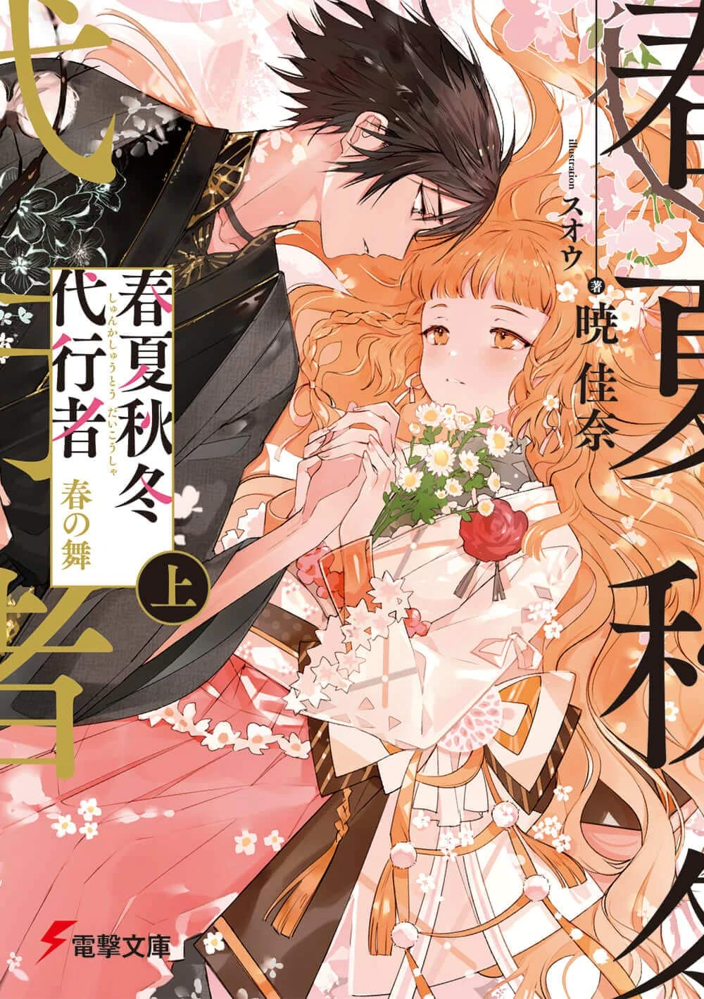
Shunkashuutou Daikousha: Haru no Mai (Agents of the Four Seasons: Dance of Spring) se passa em um mundo
onde as estações do ano são mantidas por representantes humanos conhecidos como “agentes”. Cada estação possui um escolhido
responsável por trazer seu respectivo período ao mundo.
A história acompanha a agente da primavera, Haru, que retorna após um longo desaparecimento. Sua ausência fez com que a
primavera deixasse de existir por anos, causando desequilíbrio no ciclo natural das estações.
Com seu retorno, Haru precisa enfrentar ameaças, recuperar sua força e lidar com os impactos de sua ausência, enquanto
tenta restaurar a primavera e trazer de volta o equilíbrio ao mundo.
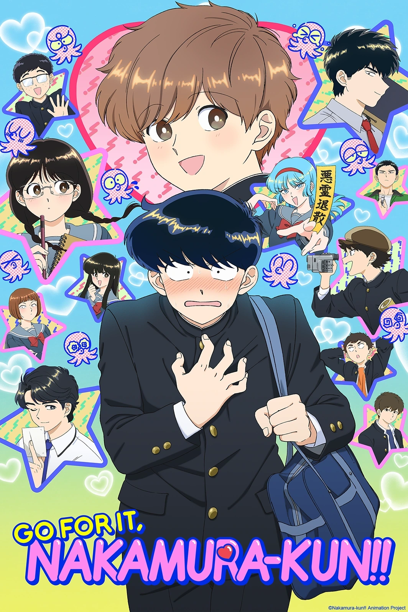
Ganbare! Nakamura-kun!! acompanha Nakamura, um estudante tímido e desajeitado que se apaixona à primeira
vista por um colega de classe, Hirose.
Apesar de seus sentimentos, Nakamura tem muita dificuldade para se aproximar e sequer consegue conversar normalmente com
Hirose, o que resulta em uma série de situações engraçadas, constrangedoras e ao mesmo tempo adoráveis.
Ao longo da história, ele tenta reunir coragem para se declarar, enfrentando sua própria timidez e insegurança, enquanto
vive pequenos momentos que o aproximam — ainda que lentamente — da pessoa que gosta.